ВЕНА
Официальный сайт города
Дополнительные информационные ресурсы, посвященные городу:
Справка:
- Основан: I век;
- Площадь: 415 км2;
- Часовой пояс: UTC+1, летом UTC+2;
- Население: 1 821 600.
Общие сведения о городе:
- Вена — федеральная столица Австрии и одновременно одна из девяти федеральных земель Австрии, расположенная
внутри другой земли, Нижней Австрии.
- Расположена в восточной части страны, у подножия Альпийских гор, на одном из берегов реки Дунай, в окружении
прекрасного Венского Леса.
- Основные водные артерии столицы — рукав Дуная Донауканал и небольшая речка Вена.
- Столица Австрии находится в самом центре Европы, на стыке ее восточной и западной части
- На протяжении многих столетий Вена является основным центром классической музыки – в свое время здесь
проживали и занимались творчеством многие признанные музыкальные гении: Моцарт, Гайдн, Бетховен, Шуберт,
Брамс.
- Всемирную славу обрели Венский хор, Венская Государственная опера, и такое яркое музыкальное мероприятие,
как Венский Бал.
- Вена является местом, где размещаются штаб-квартиры таких политических организаций как ОПЕК и ОБСЕ.
- Здесь также находится одна из резиденций ООН, а Международный Венский центр вместил представительства УНП
ООН, МАГАТЭ, организации ООН по промышленному развитию.
- Старый город Вены и дворец Шёнбрунн в декабре 2001 года были внесены в список Всемирного наследия ЮНЕСКО.
Историческая справка:
- Одна из самых значимых европейских столиц берет свое начало от маленькой кельтской деревни, которая
называлась Виндобона. Это поселение было основано в середине I века до н.э.
- В 15 году до н.э. Виндобона была завоевана римскими войсками и превратилась в форпост самой сильной на тот
момент империи, ее задачей было защищать владения Рима от набегов германцев с северной стороны.
- В последний период своего господства римляне переименовали город в Фабианой (Fabiana) по названию
расквартированной в нем фабиевой когорты.
- В V веке Римская империя пришла в упадок, и знаменитые легионы покинули Фабиану, город был полностью сожжен.
- Спустя несколько столетий, вокруг пепелища и руин снова возникают поселения, а на рубеже VIII-IX веков здесь
основана самая старая из всех сохранившихся церквей Рупрехтскирхе.
- В 881 году происходит первое упоминание о городе в источниках того времени, под названием, схожим с
современным: Вениа (Wenia). На протяжении последующих нескольких столетий этот город неоднократно
подвергался нападениям со стороны славянских и венгерских племен, и уже к Х веку Вениа превращается в важный
торговый центр.
- В XII веке современную австрийскую столицу облюбовали герцоги Бабенберги. Они сделали Вену своей
резиденцией. Эта династия оставила значительный след в архитектуре города. Так, Генрих II построил
знаменитый дворец на площади Ам-Хоф, а десятилетием ранее была сооружена церковь святого Стефана.
- Бабенберги не смогли удержать в своем владении этот замечательный город, и уже в XIII веке Вена становится
оплотом новой династии, которой предстояло на протяжении многих столетий оказывать значительное влияние на
расстановку политических сил в Европе – династии Габсбургов.
- В XV веке в Вене появляется свое епископство, что еще больше поднимает значимость города во всем
христианском мире.
- Вену на протяжении всего 1529 года осаждали многочисленные турецкие войска. Серьезное поражение и
отступление осаждающих спасло Европу от экспансии со стороны Османской империи. После победы, Вена
становится столицей австрийского государства. В позапрошлом веке она заслужила себе славу центра мировой
культуры, особенно музыки.
- Вена стала городом, который символизировал окончательную победу Европы над Наполеоном.
- Перед Первой Мировой войной население города составляло более двух миллионов человек, что само по себе
являлось для Европы рекордом.
- С поражением Австрии в мировой войне Вена утрачивает свое былое политическое и культурное значение.
- После прихода к власти Адольфа Гитлера, Австрия была в 1938 году насильно присоединена к Германии.
- Нацистский режим был свергнут 13 апреля 1945 года, когда в Вену вступили советские войска, которые занимали
его в течение десяти лет.
- В 70-80 годах прошлого столетия в Вене произошла реконструкция центральной части города, в результате чего
австрийская столица снова приобрела славу одного из самых красивых городов мира.
Фотогалерея:
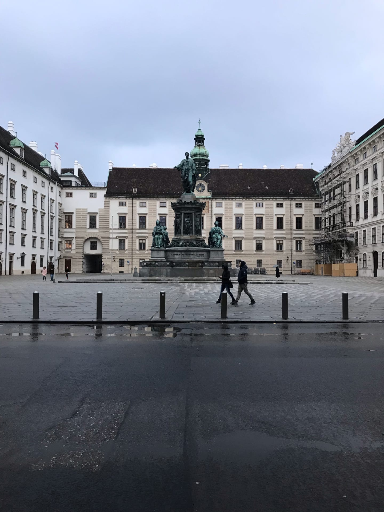
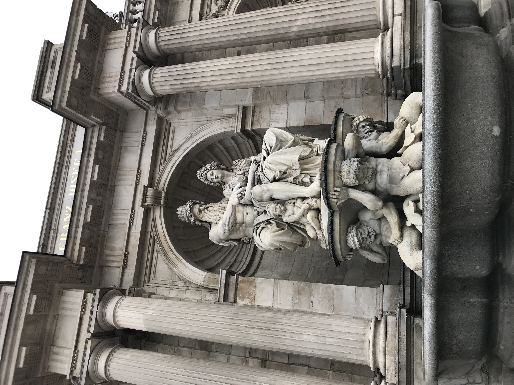
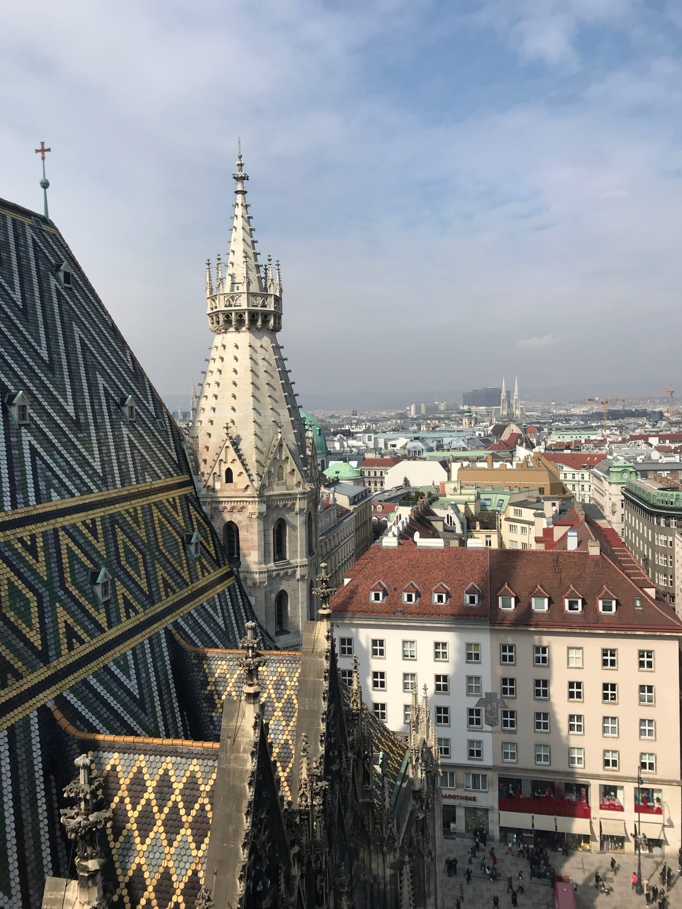
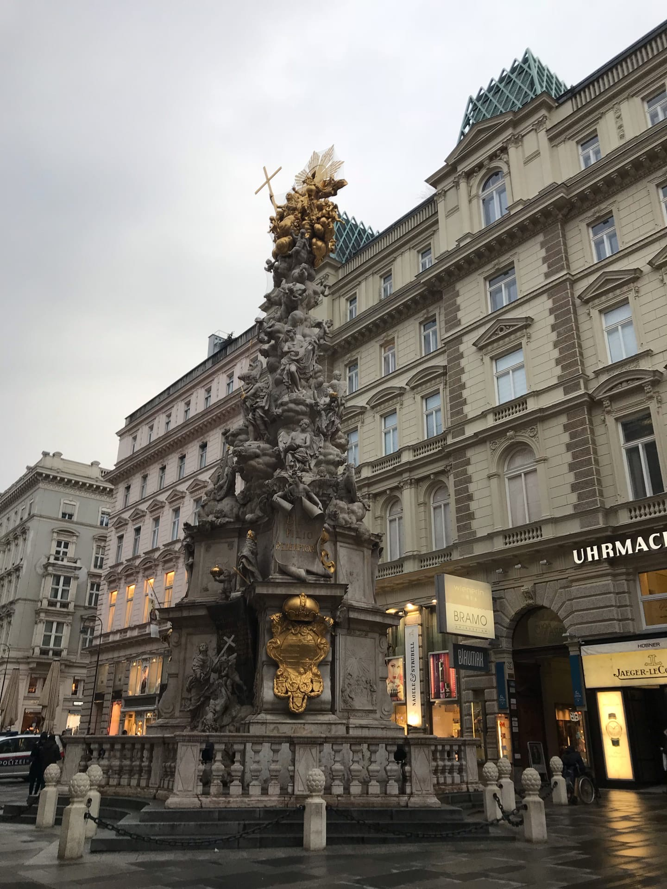
Достопримечательности города:
|
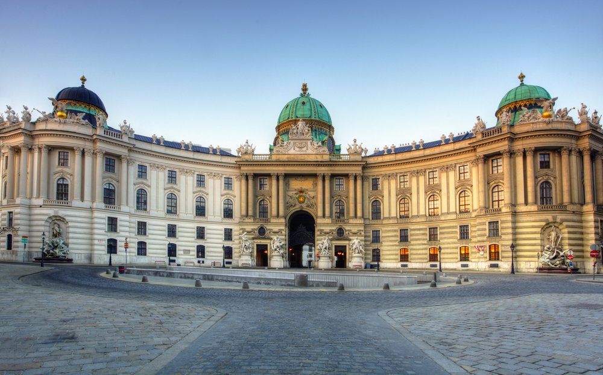
|
Дворец Хофбург
Дворец является бывшей городской резиденцией императорской
семьи и олицетворяет сам дух некогда
великой Австро-Венгерской империи. Комплекс занимает целый квартал: десятки зданий, девятнадцать
дворов, два парка и бесчисленное количество внутренних площадей. Свой нынешний облик Хофбург
приобрел к 1913 году. Сейчас на его территории размещаются музеи, галереи, национальная библиотека и
концертные залы.
|
|
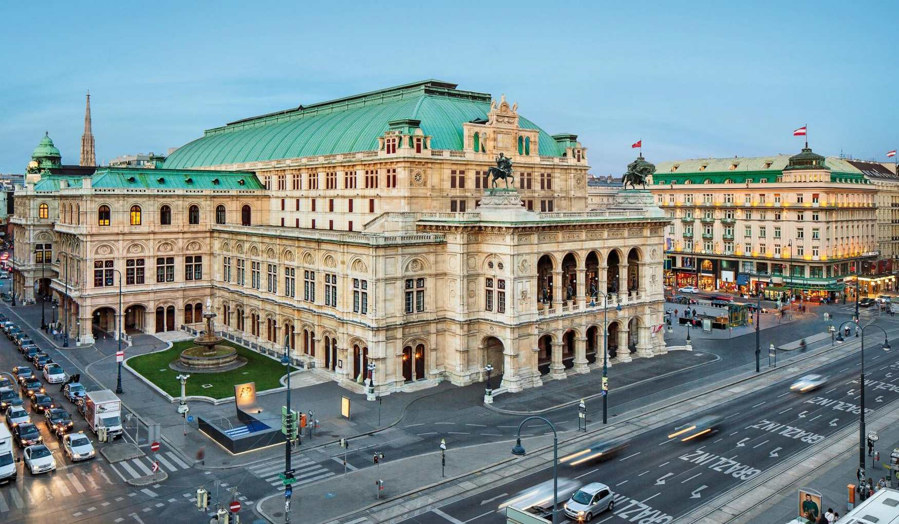
|
Венская опера
Символ Вены музыкальной, один из лучших оперных театров
Европы. Здесь в разное время выступали Пласидо Доминго, Лучано Паваротти, Мария Калласс и другие
великие исполнители. Среди регулярных постановок произведения Штраусса, Моцарта, Верди и Равеля.
Современное здание театра появилось в XIX в., его сразу же возглавил Густав Малер. На открытии в
1965 году для зрителей прозвучал «Дон Жуан» В. А. Моцарта.
|
|
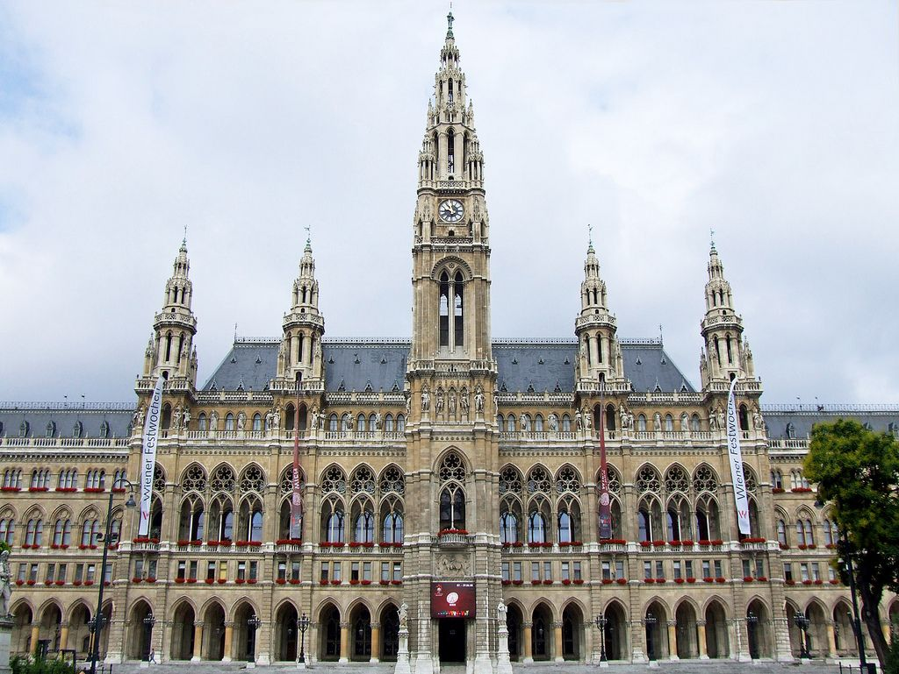
|
Венская Ратуша
Здание находится во Внутреннем городе (центральный район
Вены) и служит для административных целей. В ратуше заседает парламент — ландтаг, муниципальное
собрание, а также располагается резиденция мэра. При строительстве использовалась модель
Брюссельской ратуши в неоготическом стиле. Внутреннее убранство больше напоминает дворец с богатой
отделкой, огромными хрустальными люстрами и большими залами.
|
|
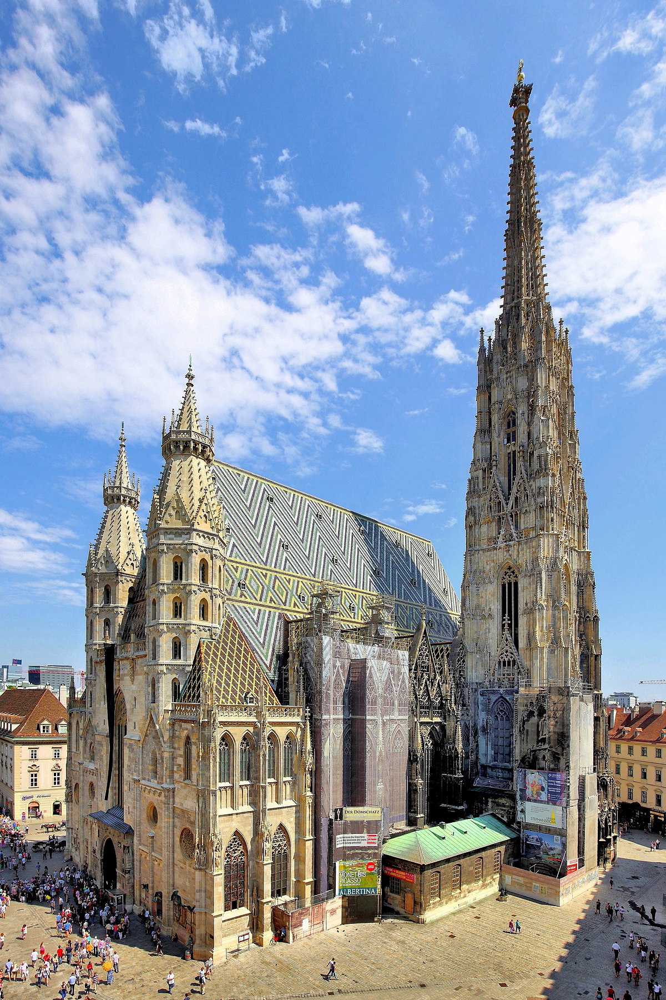
|
Собор Святого Стефана
Готический собор XIV века с пышным внутренним убранством,
настоящий символ австрийской столицы. Храм пережил множество реконструкций, к 1523 году приобрел тот
вид, в котором и сохранился до сих пор. Со смотровой площадки на одной из башен открывается
завораживающий вид на Вену. В соборных катакомбах находятся усыпальницы Е. Савойского, Фридриха III,
Рудольфа IV и других представителей королевской династии.
|

|
Церковь Святого Петра
Одна из старейших церквей столицы, построенная при
императоре Леопольде I. Купол храма был спроектирован по образу купола Собора Св. Петра в Ватикане.
Согласно некоторым историческим источникам, в 792 году здесь существовала церковь, заложенная при
Карле Великом. Первое прямое упоминание о храме относится к XII в. Здание в романском стиле сгорело
в XVII в., через десять лет на его месте была возведена современная церковь Св. Петра.
|
|
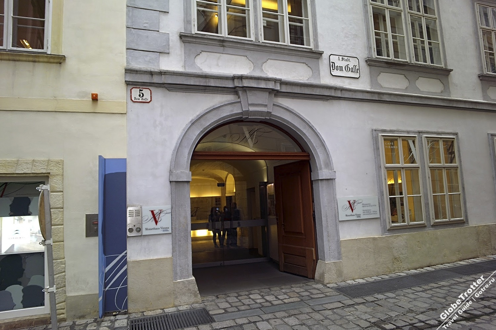
|
Дом-музей Моцарта
Квартира, в которой проживал великий композитор с семьей в
период 1784-1787 гг. Здесь на свет появилось одно из его главных творений – опера «Женитьба Фигаро».
Музей был открыт к 150-летию со смерти Моцарта и реконструирован через 100 лет. От первоначальной
обстановки остались только печь, оконные проемы и двери. В музее можно посмотреть на различные
предметы, принадлежавшие семье композитора.
|
|
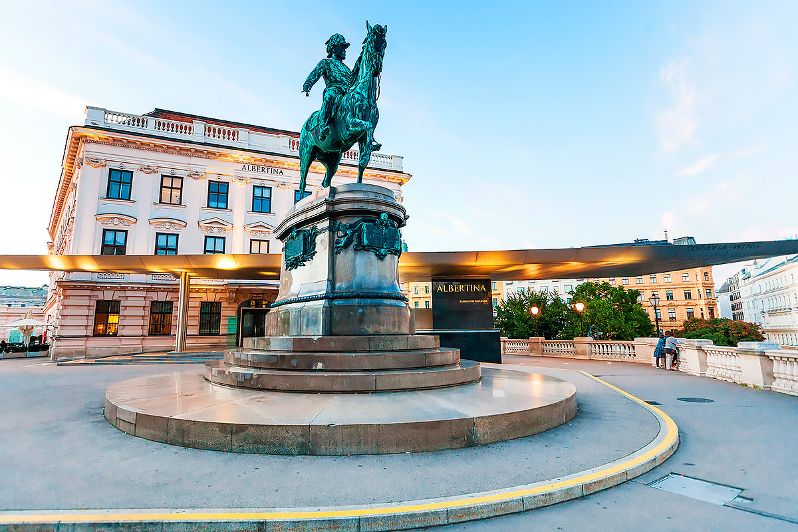
|
Галерея Альбертина
Выдающееся собрание картин, начало которой положил герцог
Альберт (Альбрехт). В галерее несколько десятков залов, в которых выставлены работы Ренуара, Моне,
Пикассо, Рубенса, Рафаэля, Микеланджело, Рембрандта. Помимо картинной экспозиции в «Альбертине» есть
библиотека с читальным залом. Для туристов открыт ресторан и сувенирный магазин, где можно купить
книги по истории искусств.
|
|
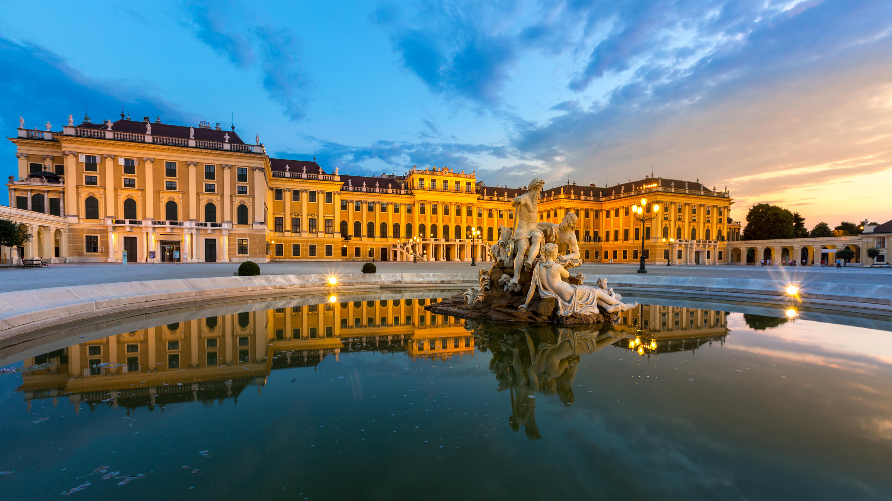
|
Шёнбрунн
Летняя резиденция Габсбургов, построенная в помпезном стиле
австрийского барокко. Дворец окружает огромный ландшафтный парк, особенно живописный весной и в
начале лета. В нем растут сотни видов цветов, кустарников, деревьев и экзотических растений. Для
посещения открыты 40 комнат и залов резиденции, где можно посмотреть на императорские спальни,
приемные покои, бальные залы.
|
-tmb-1200x628xfill.jpg)
|
Бельведер
Еще одна жемчужина стиля дворцового барокко XVIII века.
Дворцовый комплекс часто называют «Венским Версалем» за его красоту. Бельведер принадлежал
блестящему австрийскому полководцу принцу Евгению Савойскому. Сейчас в залах Нижнего и Верхнего
Бельведера размещается музейный комплекс средневекового искусства, барочного периода и внушительные
коллекции живописи разных эпох.
|
|
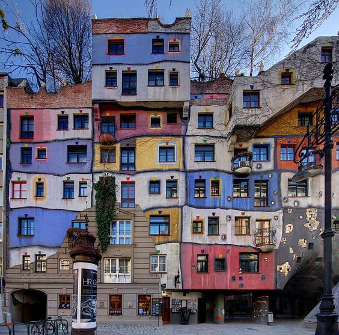
|
Дом Хундертвассера
Жилище авангардного художника и архитектора Фриденсрайха
Хундертвассера с интересным и необычным дизайном. Сам эксцентричный творец назвал его «экологическим
домом». С одной стороны, архитектура здания чем-то напоминает знаменитые творения А. Гауди: плавные
асимметричные формы, яркие цвета, балконы, украшенные в стиле «модерн». А с другой стороны –
сказочное жилище хоббитов из «Властелина Колец».
|
Текст гимна Австрии:
На немецком языке
Land der Berge, Land am Strome,
Land der Äcker, Land der Dome,
Land der Hämmer zukunftsreich!
Heimat großer Töchter und Söhne,
Volk begnadet für das Schöne,
Vielgerühmtes Österreich,
Vielgerühmtes Österreich!
Heiß umfehdet, wild umstritten,
Liegst dem Erdteil du inmitten
Einem starken Herzen gleich.
Hast seit frühen Ahnentagen
Hoher Sendung Last getragen,
Vielgeprüftes Österreich,
Vielgeprüftes Österreich.
Mutig in die neuen Zeiten,
Frei und gläubig sieh uns schreiten,
Arbeitsfroh und hoffnungsreich.
Einig laß in Bruderchören,
Vaterland, dir Treue schwören.
Vielgeliebtes Österreich,
Vielgeliebtes Österreich.
Перевод на русский язык
Край гор и вод, страна потоков,
Край пашен и седых соборов,
Край молотов богата вечно
Великих край сынов и дочерей.
Народ твоей красою очарован,
О много воспеваемая Австрия,
О много воспеваемая Австрия.
Опалена враждою диких споров
Ты центр земель свидетель битв кровавых,
Подобно сердцу сильному ты нежно.
Несешь от ранних дней отважных предков
Бесценный груз высоких их посланий
О много раз испытанная Австрия,
О много раз испытанная Австрия.
Мы с мужеством в грядущие года,
Смотри, свободно, с верою шагаем,
Богатство, радуясь труду, встречаем.
Позволь единым хором сёстрам, братьям,
Отечество, дать тебе клятву в верности,
О многообожаемая Австрия,
О многообожаемая Австрия.
Музыкальное видео с гимнов Австрии
Видеоклипы, связанные с Веной:
Карта города:
Вид со спутника:
Вернуться на домашнюю страницу: